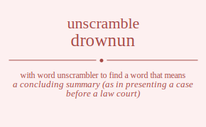

The word found after unscrambling drownun means that a concluding summary (as in presenting a case before a law court), .

The word found after unscrambling drownun means that a concluding summary (as in presenting a case before a law court), .
You can also find solutions for different combinations of letters in drownun like drownun drownnu drowunn drowunn drownnu drownun dronwun dronwnu dronuwn dronunw dronnwu dronnuw drouwnn drouwnn drounwn drounnw drounwn drounnw dronwnu dronwun dronnwu dronnuw dronuwn dronunw drwonun drwonnu drwounn drwounn drwonnu drwonun drwnoun drwnonu drwnuon drwnuno drwnnou drwnnuo drwuonn drwuonn drwunon drwunno drwunon drwunno drwnonu drwnoun drwnnou drwnnuo drwnuon drwnuno drnowun drnownu drnouwn drnounw drnonwu drnonuw drnwoun drnwonu drnwuon drnwuno drnwnou drnwnuo drnuown drnuonw drnuwon drnuwno drnunow drnunwo drnnowu drnnouw drnnwou drnnwuo drnnuow drnnuwo druownn druownn druonwn druonnw druonwn druonnw druwonn druwonn druwnon druwnno druwnon druwnno drunown drunonw drunwon drunwno drunnow drunnwo drunown drunonw drunwon drunwno drunnow drunnwo drnownu drnowun drnonwu drnonuw drnouwn drnounw drnwonu drnwoun drnwnou drnwnuo drnwuon drnwuno drnnowu drnnouw drnnwou drnnwuo drnnuow drnnuwo drnuown drnuonw drnuwon drnuwno drnunow drnunwo dorwnun dorwnnu dorwunn dorwunn dorwnnu dorwnun dornwun dornwnu dornuwn dornunw dornnwu dornnuw doruwnn doruwnn dorunwn dorunnw dorunwn dorunnw dornwnu dornwun dornnwu dornnuw dornuwn dornunw dowrnun dowrnnu dowrunn dowrunn dowrnnu dowrnun downrun downrnu downurn downunr downnru downnur dowurnn dowurnn dowunrn dowunnr dowunrn dowunnr downrnu downrun downnru downnur downurn downunr donrwun donrwnu donruwn donrunw donrnwu donrnuw donwrun donwrnu donwurn donwunr donwnru donwnur donurwn donurnw donuwrn donuwnr donunrw donunwr donnrwu donnruw donnwru donnwur donnurw donnuwr dourwnn dourwnn dournwn dournnw dournwn dournnw douwrnn douwrnn douwnrn douwnnr douwnrn douwnnr dounrwn dounrnw dounwrn dounwnr dounnrw dounnwr dounrwn dounrnw dounwrn dounwnr dounnrw dounnwr donrwnu donrwun donrnwu donrnuw donruwn donrunw donwrnu donwrun donwnru donwnur donwurn donwunr donnrwu donnruw donnwru donnwur donnurw donnuwr donurwn donurnw donuwrn donuwnr donunrw donunwr dwronun dwronnu dwrounn dwrounn dwronnu dwronun dwrnoun dwrnonu dwrnuon dwrnuno dwrnnou dwrnnuo dwruonn dwruonn dwrunon dwrunno dwrunon dwrunno dwrnonu dwrnoun dwrnnou dwrnnuo dwrnuon dwrnuno dwornun dwornnu dworunn dworunn dwornnu dwornun dwonrun dwonrnu dwonurn dwonunr dwonnru dwonnur dwournn dwournn dwounrn dwounnr dwounrn dwounnr dwonrnu dwonrun dwonnru dwonnur dwonurn dwonunr dwnroun dwnronu dwnruon dwnruno dwnrnou dwnrnuo dwnorun dwnornu dwnourn dwnounr dwnonru dwnonur dwnuron dwnurno dwnuorn dwnuonr dwnunro dwnunor dwnnrou dwnnruo dwnnoru dwnnour dwnnuro dwnnuor dwuronn dwuronn dwurnon dwurnno dwurnon dwurnno dwuornn dwuornn dwuonrn dwuonnr dwuonrn dwuonnr dwunron dwunrno dwunorn dwunonr dwunnro dwunnor dwunron dwunrno dwunorn dwunonr dwunnro dwunnor dwnronu dwnroun dwnrnou dwnrnuo dwnruon dwnruno dwnornu dwnorun dwnonru dwnonur dwnourn dwnounr dwnnrou dwnnruo dwnnoru dwnnour dwnnuro dwnnuor dwnuron dwnurno dwnuorn dwnuonr dwnunro dwnunor dnrowun dnrownu dnrouwn dnrounw dnronwu dnronuw dnrwoun dnrwonu dnrwuon dnrwuno dnrwnou dnrwnuo dnruown dnruonw dnruwon dnruwno dnrunow dnrunwo dnrnowu dnrnouw dnrnwou dnrnwuo dnrnuow dnrnuwo dnorwun dnorwnu dnoruwn dnorunw dnornwu dnornuw dnowrun dnowrnu dnowurn dnowunr dnownru dnownur dnourwn dnournw dnouwrn dnouwnr dnounrw dnounwr dnonrwu dnonruw dnonwru dnonwur dnonurw dnonuwr dnwroun dnwronu dnwruon dnwruno dnwrnou dnwrnuo dnworun dnwornu dnwourn dnwounr dnwonru dnwonur dnwuron dnwurno dnwuorn dnwuonr dnwunro dnwunor dnwnrou dnwnruo dnwnoru dnwnour dnwnuro dnwnuor dnurown dnuronw dnurwon dnurwno dnurnow dnurnwo dnuorwn dnuornw dnuowrn dnuownr dnuonrw dnuonwr dnuwron dnuwrno dnuworn dnuwonr dnuwnro dnuwnor dnunrow dnunrwo dnunorw dnunowr dnunwro dnunwor dnnrowu dnnrouw dnnrwou dnnrwuo dnnruow dnnruwo dnnorwu dnnoruw dnnowru dnnowur dnnourw dnnouwr dnnwrou dnnwruo dnnworu dnnwour dnnwuro dnnwuor dnnurow dnnurwo dnnuorw dnnuowr dnnuwro dnnuwor durownn durownn duronwn duronnw duronwn duronnw durwonn durwonn durwnon durwnno durwnon durwnno durnown durnonw durnwon durnwno durnnow durnnwo durnown durnonw durnwon durnwno durnnow durnnwo duorwnn duorwnn duornwn duornnw duornwn duornnw duowrnn duowrnn duownrn duownnr duownrn duownnr duonrwn duonrnw duonwrn duonwnr duonnrw duonnwr duonrwn duonrnw duonwrn duonwnr duonnrw duonnwr duwronn duwronn duwrnon duwrnno duwrnon duwrnno duwornn duwornn duwonrn duwonnr duwonrn duwonnr duwnron duwnrno duwnorn duwnonr duwnnro duwnnor duwnron duwnrno duwnorn duwnonr duwnnro duwnnor dunrown dunronw dunrwon dunrwno dunrnow dunrnwo dunorwn dunornw dunowrn dunownr dunonrw dunonwr dunwron dunwrno dunworn dunwonr dunwnro dunwnor dunnrow dunnrwo dunnorw dunnowr dunnwro dunnwor dunrown dunronw dunrwon dunrwno dunrnow dunrnwo dunorwn dunornw dunowrn dunownr dunonrw dunonwr dunwron dunwrno dunworn dunwonr dunwnro dunwnor dunnrow dunnrwo dunnorw dunnowr dunnwro dunnwor dnrownu dnrowun dnronwu dnronuw dnrouwn dnrounw dnrwonu dnrwoun dnrwnou dnrwnuo dnrwuon dnrwuno dnrnowu dnrnouw dnrnwou dnrnwuo dnrnuow dnrnuwo dnruown dnruonw dnruwon dnruwno dnrunow dnrunwo dnorwnu dnorwun dnornwu dnornuw dnoruwn dnorunw dnowrnu dnowrun dnownru dnownur dnowurn dnowunr dnonrwu dnonruw dnonwru dnonwur dnonurw dnonuwr dnourwn dnournw dnouwrn dnouwnr dnounrw dnounwr dnwronu dnwroun dnwrnou dnwrnuo dnwruon dnwruno dnwornu dnworun dnwonru dnwonur dnwourn dnwounr dnwnrou dnwnruo dnwnoru dnwnour dnwnuro dnwnuor dnwuron dnwurno dnwuorn dnwuonr dnwunro dnwunor dnnrowu dnnrouw dnnrwou dnnrwuo dnnruow dnnruwo dnnorwu dnnoruw dnnowru dnnowur dnnourw dnnouwr dnnwrou dnnwruo dnnworu dnnwour dnnwuro dnnwuor dnnurow dnnurwo dnnuorw dnnuowr dnnuwro dnnuwor dnurown dnuronw dnurwon dnurwno dnurnow dnurnwo dnuorwn dnuornw dnuowrn dnuownr dnuonrw dnuonwr dnuwron dnuwrno dnuworn dnuwonr dnuwnro dnuwnor dnunrow dnunrwo dnunorw dnunowr dnunwro dnunwor rdownun rdownnu rdowunn rdowunn rdownnu rdownun rdonwun rdonwnu rdonuwn rdonunw rdonnwu rdonnuw rdouwnn rdouwnn rdounwn rdounnw rdounwn rdounnw rdonwnu rdonwun rdonnwu rdonnuw rdonuwn rdonunw rdwonun rdwonnu rdwounn rdwounn rdwonnu rdwonun rdwnoun rdwnonu rdwnuon rdwnuno rdwnnou rdwnnuo rdwuonn rdwuonn rdwunon rdwunno rdwunon rdwunno rdwnonu rdwnoun rdwnnou rdwnnuo rdwnuon rdwnuno rdnowun rdnownu rdnouwn rdnounw rdnonwu rdnonuw rdnwoun rdnwonu rdnwuon rdnwuno rdnwnou rdnwnuo rdnuown rdnuonw rdnuwon rdnuwno rdnunow rdnunwo rdnnowu rdnnouw rdnnwou rdnnwuo rdnnuow rdnnuwo rduownn rduownn rduonwn rduonnw rduonwn rduonnw rduwonn rduwonn rduwnon rduwnno rduwnon rduwnno rdunown rdunonw rdunwon rdunwno rdunnow rdunnwo rdunown rdunonw rdunwon rdunwno rdunnow rdunnwo rdnownu rdnowun rdnonwu rdnonuw rdnouwn rdnounw rdnwonu rdnwoun rdnwnou rdnwnuo rdnwuon rdnwuno rdnnowu rdnnouw rdnnwou rdnnwuo rdnnuow rdnnuwo rdnuown rdnuonw rdnuwon rdnuwno rdnunow rdnunwo rodwnun rodwnnu rodwunn rodwunn rodwnnu rodwnun rodnwun rodnwnu rodnuwn rodnunw rodnnwu rodnnuw roduwnn roduwnn rodunwn rodunnw rodunwn rodunnw rodnwnu rodnwun rodnnwu rodnnuw rodnuwn rodnunw rowdnun rowdnnu rowdunn rowdunn rowdnnu rowdnun rowndun rowndnu rownudn rownund rownndu rownnud rowudnn rowudnn rowundn rowunnd rowundn rowunnd rowndnu rowndun rownndu rownnud rownudn rownund rondwun rondwnu ronduwn rondunw rondnwu rondnuw ronwdun ronwdnu ronwudn ronwund ronwndu ronwnud ronudwn ronudnw ronuwdn ronuwnd ronundw ronunwd ronndwu ronnduw ronnwdu ronnwud ronnudw ronnuwd roudwnn roudwnn roudnwn roudnnw roudnwn roudnnw rouwdnn rouwdnn rouwndn rouwnnd rouwndn rouwnnd roundwn roundnw rounwdn rounwnd rounndw rounnwd roundwn roundnw rounwdn rounwnd rounndw rounnwd rondwnu rondwun rondnwu rondnuw ronduwn rondunw ronwdnu ronwdun ronwndu ronwnud ronwudn ronwund ronndwu ronnduw ronnwdu ronnwud ronnudw ronnuwd ronudwn ronudnw ronuwdn ronuwnd ronundw ronunwd rwdonun rwdonnu rwdounn rwdounn rwdonnu rwdonun rwdnoun rwdnonu rwdnuon rwdnuno rwdnnou rwdnnuo rwduonn rwduonn rwdunon rwdunno rwdunon rwdunno rwdnonu rwdnoun rwdnnou rwdnnuo rwdnuon rwdnuno rwodnun rwodnnu rwodunn rwodunn rwodnnu rwodnun rwondun rwondnu rwonudn rwonund rwonndu rwonnud rwoudnn rwoudnn rwoundn rwounnd rwoundn rwounnd rwondnu rwondun rwonndu rwonnud rwonudn rwonund rwndoun rwndonu rwnduon rwnduno rwndnou rwndnuo rwnodun rwnodnu rwnoudn rwnound rwnondu rwnonud rwnudon rwnudno rwnuodn rwnuond rwnundo rwnunod rwnndou rwnnduo rwnnodu rwnnoud rwnnudo rwnnuod rwudonn rwudonn rwudnon rwudnno rwudnon rwudnno rwuodnn rwuodnn rwuondn rwuonnd rwuondn rwuonnd rwundon rwundno rwunodn rwunond rwunndo rwunnod rwundon rwundno rwunodn rwunond rwunndo rwunnod rwndonu rwndoun rwndnou rwndnuo rwnduon rwnduno rwnodnu rwnodun rwnondu rwnonud rwnoudn rwnound rwnndou rwnnduo rwnnodu rwnnoud rwnnudo rwnnuod rwnudon rwnudno rwnuodn rwnuond rwnundo rwnunod rndowun rndownu rndouwn rndounw rndonwu rndonuw rndwoun rndwonu rndwuon rndwuno rndwnou rndwnuo rnduown rnduonw rnduwon rnduwno rndunow rndunwo rndnowu rndnouw rndnwou rndnwuo rndnuow rndnuwo rnodwun rnodwnu rnoduwn rnodunw rnodnwu rnodnuw rnowdun rnowdnu rnowudn rnowund rnowndu rnownud rnoudwn rnoudnw rnouwdn rnouwnd rnoundw rnounwd rnondwu rnonduw rnonwdu rnonwud rnonudw rnonuwd rnwdoun rnwdonu rnwduon rnwduno rnwdnou rnwdnuo rnwodun rnwodnu rnwoudn rnwound rnwondu rnwonud rnwudon rnwudno rnwuodn rnwuond rnwundo rnwunod rnwndou rnwnduo rnwnodu rnwnoud rnwnudo rnwnuod rnudown rnudonw rnudwon rnudwno rnudnow rnudnwo rnuodwn rnuodnw rnuowdn rnuownd rnuondw rnuonwd rnuwdon rnuwdno rnuwodn rnuwond rnuwndo rnuwnod rnundow rnundwo rnunodw rnunowd rnunwdo rnunwod rnndowu rnndouw rnndwou rnndwuo rnnduow rnnduwo rnnodwu rnnoduw rnnowdu rnnowud rnnoudw rnnouwd rnnwdou rnnwduo rnnwodu rnnwoud rnnwudo rnnwuod rnnudow rnnudwo rnnuodw rnnuowd rnnuwdo rnnuwod rudownn rudownn rudonwn rudonnw rudonwn rudonnw rudwonn rudwonn rudwnon rudwnno rudwnon rudwnno rudnown rudnonw rudnwon rudnwno rudnnow rudnnwo rudnown rudnonw rudnwon rudnwno rudnnow rudnnwo ruodwnn ruodwnn ruodnwn ruodnnw ruodnwn ruodnnw ruowdnn ruowdnn ruowndn ruownnd ruowndn ruownnd ruondwn ruondnw ruonwdn ruonwnd ruonndw ruonnwd ruondwn ruondnw ruonwdn ruonwnd ruonndw ruonnwd ruwdonn ruwdonn ruwdnon ruwdnno ruwdnon ruwdnno ruwodnn ruwodnn ruwondn ruwonnd ruwondn ruwonnd ruwndon ruwndno ruwnodn ruwnond ruwnndo ruwnnod ruwndon ruwndno ruwnodn ruwnond ruwnndo ruwnnod rundown rundonw rundwon rundwno rundnow rundnwo runodwn runodnw runowdn runownd runondw runonwd runwdon runwdno runwodn runwond runwndo runwnod runndow runndwo runnodw runnowd runnwdo runnwod rundown rundonw rundwon rundwno rundnow rundnwo runodwn runodnw runowdn runownd runondw runonwd runwdon runwdno runwodn runwond runwndo runwnod runndow runndwo runnodw runnowd runnwdo runnwod rndownu rndowun rndonwu rndonuw rndouwn rndounw rndwonu rndwoun rndwnou rndwnuo rndwuon rndwuno rndnowu rndnouw rndnwou rndnwuo rndnuow rndnuwo rnduown rnduonw rnduwon rnduwno rndunow rndunwo rnodwnu rnodwun rnodnwu rnodnuw rnoduwn rnodunw rnowdnu rnowdun rnowndu rnownud rnowudn rnowund rnondwu rnonduw rnonwdu rnonwud rnonudw rnonuwd rnoudwn rnoudnw rnouwdn rnouwnd rnoundw rnounwd rnwdonu rnwdoun rnwdnou rnwdnuo rnwduon rnwduno rnwodnu rnwodun rnwondu rnwonud rnwoudn rnwound rnwndou rnwnduo rnwnodu rnwnoud rnwnudo rnwnuod rnwudon rnwudno rnwuodn rnwuond rnwundo rnwunod rnndowu rnndouw rnndwou rnndwuo rnnduow rnnduwo rnnodwu rnnoduw rnnowdu rnnowud rnnoudw rnnouwd rnnwdou rnnwduo rnnwodu rnnwoud rnnwudo rnnwuod rnnudow rnnudwo rnnuodw rnnuowd rnnuwdo rnnuwod rnudown rnudonw rnudwon rnudwno rnudnow rnudnwo rnuodwn rnuodnw rnuowdn rnuownd rnuondw rnuonwd rnuwdon rnuwdno rnuwodn rnuwond rnuwndo rnuwnod rnundow rnundwo rnunodw rnunowd rnunwdo rnunwod odrwnun odrwnnu odrwunn odrwunn odrwnnu odrwnun odrnwun odrnwnu odrnuwn odrnunw odrnnwu odrnnuw odruwnn odruwnn odrunwn odrunnw odrunwn odrunnw odrnwnu odrnwun odrnnwu odrnnuw odrnuwn odrnunw odwrnun odwrnnu odwrunn odwrunn odwrnnu odwrnun odwnrun odwnrnu odwnurn odwnunr odwnnru odwnnur odwurnn odwurnn odwunrn odwunnr odwunrn odwunnr odwnrnu odwnrun odwnnru odwnnur odwnurn odwnunr odnrwun odnrwnu odnruwn odnrunw odnrnwu odnrnuw odnwrun odnwrnu odnwurn odnwunr odnwnru odnwnur odnurwn odnurnw odnuwrn odnuwnr odnunrw odnunwr odnnrwu odnnruw odnnwru odnnwur odnnurw odnnuwr odurwnn odurwnn odurnwn odurnnw odurnwn odurnnw oduwrnn oduwrnn oduwnrn oduwnnr oduwnrn oduwnnr odunrwn odunrnw odunwrn odunwnr odunnrw odunnwr odunrwn odunrnw odunwrn odunwnr odunnrw odunnwr odnrwnu odnrwun odnrnwu odnrnuw odnruwn odnrunw odnwrnu odnwrun odnwnru odnwnur odnwurn odnwunr odnnrwu odnnruw odnnwru odnnwur odnnurw odnnuwr odnurwn odnurnw odnuwrn odnuwnr odnunrw odnunwr ordwnun ordwnnu ordwunn ordwunn ordwnnu ordwnun ordnwun ordnwnu ordnuwn ordnunw ordnnwu ordnnuw orduwnn orduwnn ordunwn ordunnw ordunwn ordunnw ordnwnu ordnwun ordnnwu ordnnuw ordnuwn ordnunw orwdnun orwdnnu orwdunn orwdunn orwdnnu orwdnun orwndun orwndnu orwnudn orwnund orwnndu orwnnud orwudnn orwudnn orwundn orwunnd orwundn orwunnd orwndnu orwndun orwnndu orwnnud orwnudn orwnund orndwun orndwnu ornduwn orndunw orndnwu orndnuw ornwdun ornwdnu ornwudn ornwund ornwndu ornwnud ornudwn ornudnw ornuwdn ornuwnd ornundw ornunwd ornndwu ornnduw ornnwdu ornnwud ornnudw ornnuwd orudwnn orudwnn orudnwn orudnnw orudnwn orudnnw oruwdnn oruwdnn oruwndn oruwnnd oruwndn oruwnnd orundwn orundnw orunwdn orunwnd orunndw orunnwd orundwn orundnw orunwdn orunwnd orunndw orunnwd orndwnu orndwun orndnwu orndnuw ornduwn orndunw ornwdnu ornwdun ornwndu ornwnud ornwudn ornwund ornndwu ornnduw ornnwdu ornnwud ornnudw ornnuwd ornudwn ornudnw ornuwdn ornuwnd ornundw ornunwd owdrnun owdrnnu owdrunn owdrunn owdrnnu owdrnun owdnrun owdnrnu owdnurn owdnunr owdnnru owdnnur owdurnn owdurnn owdunrn owdunnr owdunrn owdunnr owdnrnu owdnrun owdnnru owdnnur owdnurn owdnunr owrdnun owrdnnu owrdunn owrdunn owrdnnu owrdnun owrndun owrndnu owrnudn owrnund owrnndu owrnnud owrudnn owrudnn owrundn owrunnd owrundn owrunnd owrndnu owrndun owrnndu owrnnud owrnudn owrnund owndrun owndrnu owndurn owndunr owndnru owndnur ownrdun ownrdnu ownrudn ownrund ownrndu ownrnud ownudrn ownudnr ownurdn ownurnd ownundr ownunrd ownndru ownndur ownnrdu ownnrud ownnudr ownnurd owudrnn owudrnn owudnrn owudnnr owudnrn owudnnr owurdnn owurdnn owurndn owurnnd owurndn owurnnd owundrn owundnr owunrdn owunrnd owunndr owunnrd owundrn owundnr owunrdn owunrnd owunndr owunnrd owndrnu owndrun owndnru owndnur owndurn owndunr ownrdnu ownrdun ownrndu ownrnud ownrudn ownrund ownndru ownndur ownnrdu ownnrud ownnudr ownnurd ownudrn ownudnr ownurdn ownurnd ownundr ownunrd ondrwun ondrwnu ondruwn ondrunw ondrnwu ondrnuw ondwrun ondwrnu ondwurn ondwunr ondwnru ondwnur ondurwn ondurnw onduwrn onduwnr ondunrw ondunwr ondnrwu ondnruw ondnwru ondnwur ondnurw ondnuwr onrdwun onrdwnu onrduwn onrdunw onrdnwu onrdnuw onrwdun onrwdnu onrwudn onrwund onrwndu onrwnud onrudwn onrudnw onruwdn onruwnd onrundw onrunwd onrndwu onrnduw onrnwdu onrnwud onrnudw onrnuwd onwdrun onwdrnu onwdurn onwdunr onwdnru onwdnur onwrdun onwrdnu onwrudn onwrund onwrndu onwrnud onwudrn onwudnr onwurdn onwurnd onwundr onwunrd onwndru onwndur onwnrdu onwnrud onwnudr onwnurd onudrwn onudrnw onudwrn onudwnr onudnrw onudnwr onurdwn onurdnw onurwdn onurwnd onurndw onurnwd onuwdrn onuwdnr onuwrdn onuwrnd onuwndr onuwnrd onundrw onundwr onunrdw onunrwd onunwdr onunwrd onndrwu onndruw onndwru onndwur onndurw onnduwr onnrdwu onnrduw onnrwdu onnrwud onnrudw onnruwd onnwdru onnwdur onnwrdu onnwrud onnwudr onnwurd onnudrw onnudwr onnurdw onnurwd onnuwdr onnuwrd oudrwnn oudrwnn oudrnwn oudrnnw oudrnwn oudrnnw oudwrnn oudwrnn oudwnrn oudwnnr oudwnrn oudwnnr oudnrwn oudnrnw oudnwrn oudnwnr oudnnrw oudnnwr oudnrwn oudnrnw oudnwrn oudnwnr oudnnrw oudnnwr ourdwnn ourdwnn ourdnwn ourdnnw ourdnwn ourdnnw ourwdnn ourwdnn ourwndn ourwnnd ourwndn ourwnnd ourndwn ourndnw ournwdn ournwnd ournndw ournnwd ourndwn ourndnw ournwdn ournwnd ournndw ournnwd ouwdrnn ouwdrnn ouwdnrn ouwdnnr ouwdnrn ouwdnnr ouwrdnn ouwrdnn ouwrndn ouwrnnd ouwrndn ouwrnnd ouwndrn ouwndnr ouwnrdn ouwnrnd ouwnndr ouwnnrd ouwndrn ouwndnr ouwnrdn ouwnrnd ouwnndr ouwnnrd oundrwn oundrnw oundwrn oundwnr oundnrw oundnwr ounrdwn ounrdnw ounrwdn ounrwnd ounrndw ounrnwd ounwdrn ounwdnr ounwrdn ounwrnd ounwndr ounwnrd ounndrw ounndwr ounnrdw ounnrwd ounnwdr ounnwrd oundrwn oundrnw oundwrn oundwnr oundnrw oundnwr ounrdwn ounrdnw ounrwdn ounrwnd ounrndw ounrnwd ounwdrn ounwdnr ounwrdn ounwrnd ounwndr ounwnrd ounndrw ounndwr ounnrdw ounnrwd ounnwdr ounnwrd ondrwnu ondrwun ondrnwu ondrnuw ondruwn ondrunw ondwrnu ondwrun ondwnru ondwnur ondwurn ondwunr ondnrwu ondnruw ondnwru ondnwur ondnurw ondnuwr ondurwn ondurnw onduwrn onduwnr ondunrw ondunwr onrdwnu onrdwun onrdnwu onrdnuw onrduwn onrdunw onrwdnu onrwdun onrwndu onrwnud onrwudn onrwund onrndwu onrnduw onrnwdu onrnwud onrnudw onrnuwd onrudwn onrudnw onruwdn onruwnd onrundw onrunwd onwdrnu onwdrun onwdnru onwdnur onwdurn onwdunr onwrdnu onwrdun onwrndu onwrnud onwrudn onwrund onwndru onwndur onwnrdu onwnrud onwnudr onwnurd onwudrn onwudnr onwurdn onwurnd onwundr onwunrd onndrwu onndruw onndwru onndwur onndurw onnduwr onnrdwu onnrduw onnrwdu onnrwud onnrudw onnruwd onnwdru onnwdur onnwrdu onnwrud onnwudr onnwurd onnudrw onnudwr onnurdw onnurwd onnuwdr onnuwrd onudrwn onudrnw onudwrn onudwnr onudnrw onudnwr onurdwn onurdnw onurwdn onurwnd onurndw onurnwd onuwdrn onuwdnr onuwrdn onuwrnd onuwndr onuwnrd onundrw onundwr onunrdw onunrwd onunwdr onunwrd wdronun wdronnu wdrounn wdrounn wdronnu wdronun wdrnoun wdrnonu wdrnuon wdrnuno wdrnnou wdrnnuo wdruonn wdruonn wdrunon wdrunno wdrunon wdrunno wdrnonu wdrnoun wdrnnou wdrnnuo wdrnuon wdrnuno wdornun wdornnu wdorunn wdorunn wdornnu wdornun wdonrun wdonrnu wdonurn wdonunr wdonnru wdonnur wdournn wdournn wdounrn wdounnr wdounrn wdounnr wdonrnu wdonrun wdonnru wdonnur wdonurn wdonunr wdnroun wdnronu wdnruon wdnruno wdnrnou wdnrnuo wdnorun wdnornu wdnourn wdnounr wdnonru wdnonur wdnuron wdnurno wdnuorn wdnuonr wdnunro wdnunor wdnnrou wdnnruo wdnnoru wdnnour wdnnuro wdnnuor wduronn wduronn wdurnon wdurnno wdurnon wdurnno wduornn wduornn wduonrn wduonnr wduonrn wduonnr wdunron wdunrno wdunorn wdunonr wdunnro wdunnor wdunron wdunrno wdunorn wdunonr wdunnro wdunnor wdnronu wdnroun wdnrnou wdnrnuo wdnruon wdnruno wdnornu wdnorun wdnonru wdnonur wdnourn wdnounr wdnnrou wdnnruo wdnnoru wdnnour wdnnuro wdnnuor wdnuron wdnurno wdnuorn wdnuonr wdnunro wdnunor wrdonun wrdonnu wrdounn wrdounn wrdonnu wrdonun wrdnoun wrdnonu wrdnuon wrdnuno wrdnnou wrdnnuo wrduonn wrduonn wrdunon wrdunno wrdunon wrdunno wrdnonu wrdnoun wrdnnou wrdnnuo wrdnuon wrdnuno wrodnun wrodnnu wrodunn wrodunn wrodnnu wrodnun wrondun wrondnu wronudn wronund wronndu wronnud wroudnn wroudnn wroundn wrounnd wroundn wrounnd wrondnu wrondun wronndu wronnud wronudn wronund wrndoun wrndonu wrnduon wrnduno wrndnou wrndnuo wrnodun wrnodnu wrnoudn wrnound wrnondu wrnonud wrnudon wrnudno wrnuodn wrnuond wrnundo wrnunod wrnndou wrnnduo wrnnodu wrnnoud wrnnudo wrnnuod wrudonn wrudonn wrudnon wrudnno wrudnon wrudnno wruodnn wruodnn wruondn wruonnd wruondn wruonnd wrundon wrundno wrunodn wrunond wrunndo wrunnod wrundon wrundno wrunodn wrunond wrunndo wrunnod wrndonu wrndoun wrndnou wrndnuo wrnduon wrnduno wrnodnu wrnodun wrnondu wrnonud wrnoudn wrnound wrnndou wrnnduo wrnnodu wrnnoud wrnnudo wrnnuod wrnudon wrnudno wrnuodn wrnuond wrnundo wrnunod wodrnun wodrnnu wodrunn wodrunn wodrnnu wodrnun wodnrun wodnrnu wodnurn wodnunr wodnnru wodnnur wodurnn wodurnn wodunrn wodunnr wodunrn wodunnr wodnrnu wodnrun wodnnru wodnnur wodnurn wodnunr wordnun wordnnu wordunn wordunn wordnnu wordnun worndun worndnu wornudn wornund wornndu wornnud worudnn worudnn worundn worunnd worundn worunnd worndnu worndun wornndu wornnud wornudn wornund wondrun wondrnu wondurn wondunr wondnru wondnur wonrdun wonrdnu wonrudn wonrund wonrndu wonrnud wonudrn wonudnr wonurdn wonurnd wonundr wonunrd wonndru wonndur wonnrdu wonnrud wonnudr wonnurd woudrnn woudrnn woudnrn woudnnr woudnrn woudnnr wourdnn wourdnn wourndn wournnd wourndn wournnd woundrn woundnr wounrdn wounrnd wounndr wounnrd woundrn woundnr wounrdn wounrnd wounndr wounnrd wondrnu wondrun wondnru wondnur wondurn wondunr wonrdnu wonrdun wonrndu wonrnud wonrudn wonrund wonndru wonndur wonnrdu wonnrud wonnudr wonnurd wonudrn wonudnr wonurdn wonurnd wonundr wonunrd wndroun wndronu wndruon wndruno wndrnou wndrnuo wndorun wndornu wndourn wndounr wndonru wndonur wnduron wndurno wnduorn wnduonr wndunro wndunor wndnrou wndnruo wndnoru wndnour wndnuro wndnuor wnrdoun wnrdonu wnrduon wnrduno wnrdnou wnrdnuo wnrodun wnrodnu wnroudn wnround wnrondu wnronud wnrudon wnrudno wnruodn wnruond wnrundo wnrunod wnrndou wnrnduo wnrnodu wnrnoud wnrnudo wnrnuod wnodrun wnodrnu wnodurn wnodunr wnodnru wnodnur wnordun wnordnu wnorudn wnorund wnorndu wnornud wnoudrn wnoudnr wnourdn wnournd wnoundr wnounrd wnondru wnondur wnonrdu wnonrud wnonudr wnonurd wnudron wnudrno wnudorn wnudonr wnudnro wnudnor wnurdon wnurdno wnurodn wnurond wnurndo wnurnod wnuodrn wnuodnr wnuordn wnuornd wnuondr wnuonrd wnundro wnundor wnunrdo wnunrod wnunodr wnunord wnndrou wnndruo wnndoru wnndour wnnduro wnnduor wnnrdou wnnrduo wnnrodu wnnroud wnnrudo wnnruod wnnodru wnnodur wnnordu wnnorud wnnoudr wnnourd wnnudro wnnudor wnnurdo wnnurod wnnuodr wnnuord wudronn wudronn wudrnon wudrnno wudrnon wudrnno wudornn wudornn wudonrn wudonnr wudonrn wudonnr wudnron wudnrno wudnorn wudnonr wudnnro wudnnor wudnron wudnrno wudnorn wudnonr wudnnro wudnnor wurdonn wurdonn wurdnon wurdnno wurdnon wurdnno wurodnn wurodnn wurondn wuronnd wurondn wuronnd wurndon wurndno wurnodn wurnond wurnndo wurnnod wurndon wurndno wurnodn wurnond wurnndo wurnnod wuodrnn wuodrnn wuodnrn wuodnnr wuodnrn wuodnnr wuordnn wuordnn wuorndn wuornnd wuorndn wuornnd wuondrn wuondnr wuonrdn wuonrnd wuonndr wuonnrd wuondrn wuondnr wuonrdn wuonrnd wuonndr wuonnrd wundron wundrno wundorn wundonr wundnro wundnor wunrdon wunrdno wunrodn wunrond wunrndo wunrnod wunodrn wunodnr wunordn wunornd wunondr wunonrd wunndro wunndor wunnrdo wunnrod wunnodr wunnord wundron wundrno wundorn wundonr wundnro wundnor wunrdon wunrdno wunrodn wunrond wunrndo wunrnod wunodrn wunodnr wunordn wunornd wunondr wunonrd wunndro wunndor wunnrdo wunnrod wunnodr wunnord wndronu wndroun wndrnou wndrnuo wndruon wndruno wndornu wndorun wndonru wndonur wndourn wndounr wndnrou wndnruo wndnoru wndnour wndnuro wndnuor wnduron wndurno wnduorn wnduonr wndunro wndunor wnrdonu wnrdoun wnrdnou wnrdnuo wnrduon wnrduno wnrodnu wnrodun wnrondu wnronud wnroudn wnround wnrndou wnrnduo wnrnodu wnrnoud wnrnudo wnrnuod wnrudon wnrudno wnruodn wnruond wnrundo wnrunod wnodrnu wnodrun wnodnru wnodnur wnodurn wnodunr wnordnu wnordun wnorndu wnornud wnorudn wnorund wnondru wnondur wnonrdu wnonrud wnonudr wnonurd wnoudrn wnoudnr wnourdn wnournd wnoundr wnounrd wnndrou wnndruo wnndoru wnndour wnnduro wnnduor wnnrdou wnnrduo wnnrodu wnnroud wnnrudo wnnruod wnnodru wnnodur wnnordu wnnorud wnnoudr wnnourd wnnudro wnnudor wnnurdo wnnurod wnnuodr wnnuord wnudron wnudrno wnudorn wnudonr wnudnro wnudnor wnurdon wnurdno wnurodn wnurond wnurndo wnurnod wnuodrn wnuodnr wnuordn wnuornd wnuondr wnuonrd wnundro wnundor wnunrdo wnunrod wnunodr wnunord ndrowun ndrownu ndrouwn ndrounw ndronwu ndronuw ndrwoun ndrwonu ndrwuon ndrwuno ndrwnou ndrwnuo ndruown ndruonw ndruwon ndruwno ndrunow ndrunwo ndrnowu ndrnouw ndrnwou ndrnwuo ndrnuow ndrnuwo ndorwun ndorwnu ndoruwn ndorunw ndornwu ndornuw ndowrun ndowrnu ndowurn ndowunr ndownru ndownur ndourwn ndournw ndouwrn ndouwnr ndounrw ndounwr ndonrwu ndonruw ndonwru ndonwur ndonurw ndonuwr ndwroun ndwronu ndwruon ndwruno ndwrnou ndwrnuo ndworun ndwornu ndwourn ndwounr ndwonru ndwonur ndwuron ndwurno ndwuorn ndwuonr ndwunro ndwunor ndwnrou ndwnruo ndwnoru ndwnour ndwnuro ndwnuor ndurown nduronw ndurwon ndurwno ndurnow ndurnwo nduorwn nduornw nduowrn nduownr nduonrw nduonwr nduwron nduwrno nduworn nduwonr nduwnro nduwnor ndunrow ndunrwo ndunorw ndunowr ndunwro ndunwor ndnrowu ndnrouw ndnrwou ndnrwuo ndnruow ndnruwo ndnorwu ndnoruw ndnowru ndnowur ndnourw ndnouwr ndnwrou ndnwruo ndnworu ndnwour ndnwuro ndnwuor ndnurow ndnurwo ndnuorw ndnuowr ndnuwro ndnuwor nrdowun nrdownu nrdouwn nrdounw nrdonwu nrdonuw nrdwoun nrdwonu nrdwuon nrdwuno nrdwnou nrdwnuo nrduown nrduonw nrduwon nrduwno nrdunow nrdunwo nrdnowu nrdnouw nrdnwou nrdnwuo nrdnuow nrdnuwo nrodwun nrodwnu nroduwn nrodunw nrodnwu nrodnuw nrowdun nrowdnu nrowudn nrowund nrowndu nrownud nroudwn nroudnw nrouwdn nrouwnd nroundw nrounwd nrondwu nronduw nronwdu nronwud nronudw nronuwd nrwdoun nrwdonu nrwduon nrwduno nrwdnou nrwdnuo nrwodun nrwodnu nrwoudn nrwound nrwondu nrwonud nrwudon nrwudno nrwuodn nrwuond nrwundo nrwunod nrwndou nrwnduo nrwnodu nrwnoud nrwnudo nrwnuod nrudown nrudonw nrudwon nrudwno nrudnow nrudnwo nruodwn nruodnw nruowdn nruownd nruondw nruonwd nruwdon nruwdno nruwodn nruwond nruwndo nruwnod nrundow nrundwo nrunodw nrunowd nrunwdo nrunwod nrndowu nrndouw nrndwou nrndwuo nrnduow nrnduwo nrnodwu nrnoduw nrnowdu nrnowud nrnoudw nrnouwd nrnwdou nrnwduo nrnwodu nrnwoud nrnwudo nrnwuod nrnudow nrnudwo nrnuodw nrnuowd nrnuwdo nrnuwod nodrwun nodrwnu nodruwn nodrunw nodrnwu nodrnuw nodwrun nodwrnu nodwurn nodwunr nodwnru nodwnur nodurwn nodurnw noduwrn noduwnr nodunrw nodunwr nodnrwu nodnruw nodnwru nodnwur nodnurw nodnuwr nordwun nordwnu norduwn nordunw nordnwu nordnuw norwdun norwdnu norwudn norwund norwndu norwnud norudwn norudnw noruwdn noruwnd norundw norunwd norndwu nornduw nornwdu nornwud nornudw nornuwd nowdrun nowdrnu nowdurn nowdunr nowdnru nowdnur nowrdun nowrdnu nowrudn nowrund nowrndu nowrnud nowudrn nowudnr nowurdn nowurnd nowundr nowunrd nowndru nowndur nownrdu nownrud nownudr nownurd noudrwn noudrnw noudwrn noudwnr noudnrw noudnwr nourdwn nourdnw nourwdn nourwnd nourndw nournwd nouwdrn nouwdnr nouwrdn nouwrnd nouwndr nouwnrd noundrw noundwr nounrdw nounrwd nounwdr nounwrd nondrwu nondruw nondwru nondwur nondurw nonduwr nonrdwu nonrduw nonrwdu nonrwud nonrudw nonruwd nonwdru nonwdur nonwrdu nonwrud nonwudr nonwurd nonudrw nonudwr nonurdw nonurwd nonuwdr nonuwrd nwdroun nwdronu nwdruon nwdruno nwdrnou nwdrnuo nwdorun nwdornu nwdourn nwdounr nwdonru nwdonur nwduron nwdurno nwduorn nwduonr nwdunro nwdunor nwdnrou nwdnruo nwdnoru nwdnour nwdnuro nwdnuor nwrdoun nwrdonu nwrduon nwrduno nwrdnou nwrdnuo nwrodun nwrodnu nwroudn nwround nwrondu nwronud nwrudon nwrudno nwruodn nwruond nwrundo nwrunod nwrndou nwrnduo nwrnodu nwrnoud nwrnudo nwrnuod nwodrun nwodrnu nwodurn nwodunr nwodnru nwodnur nwordun nwordnu nworudn nworund nworndu nwornud nwoudrn nwoudnr nwourdn nwournd nwoundr nwounrd nwondru nwondur nwonrdu nwonrud nwonudr nwonurd nwudron nwudrno nwudorn nwudonr nwudnro nwudnor nwurdon nwurdno nwurodn nwurond nwurndo nwurnod nwuodrn nwuodnr nwuordn nwuornd nwuondr nwuonrd nwundro nwundor nwunrdo nwunrod nwunodr nwunord nwndrou nwndruo nwndoru nwndour nwnduro nwnduor nwnrdou nwnrduo nwnrodu nwnroud nwnrudo nwnruod nwnodru nwnodur nwnordu nwnorud nwnoudr nwnourd nwnudro nwnudor nwnurdo nwnurod nwnuodr nwnuord nudrown nudronw nudrwon nudrwno nudrnow nudrnwo nudorwn nudornw nudowrn nudownr nudonrw nudonwr nudwron nudwrno nudworn nudwonr nudwnro nudwnor nudnrow nudnrwo nudnorw nudnowr nudnwro nudnwor nurdown nurdonw nurdwon nurdwno nurdnow nurdnwo nurodwn nurodnw nurowdn nurownd nurondw nuronwd nurwdon nurwdno nurwodn nurwond nurwndo nurwnod nurndow nurndwo nurnodw nurnowd nurnwdo nurnwod nuodrwn nuodrnw nuodwrn nuodwnr nuodnrw nuodnwr nuordwn nuordnw nuorwdn nuorwnd nuorndw nuornwd nuowdrn nuowdnr nuowrdn nuowrnd nuowndr nuownrd nuondrw nuondwr nuonrdw nuonrwd nuonwdr nuonwrd nuwdron nuwdrno nuwdorn nuwdonr nuwdnro nuwdnor nuwrdon nuwrdno nuwrodn nuwrond nuwrndo nuwrnod nuwodrn nuwodnr nuwordn nuwornd nuwondr nuwonrd nuwndro nuwndor nuwnrdo nuwnrod nuwnodr nuwnord nundrow nundrwo nundorw nundowr nundwro nundwor nunrdow nunrdwo nunrodw nunrowd nunrwdo nunrwod nunodrw nunodwr nunordw nunorwd nunowdr nunowrd nunwdro nunwdor nunwrdo nunwrod nunwodr nunword nndrowu nndrouw nndrwou nndrwuo nndruow nndruwo nndorwu nndoruw nndowru nndowur nndourw nndouwr nndwrou nndwruo nndworu nndwour nndwuro nndwuor nndurow nndurwo nnduorw nnduowr nnduwro nnduwor nnrdowu nnrdouw nnrdwou nnrdwuo nnrduow nnrduwo nnrodwu nnroduw nnrowdu nnrowud nnroudw nnrouwd nnrwdou nnrwduo nnrwodu nnrwoud nnrwudo nnrwuod nnrudow nnrudwo nnruodw nnruowd nnruwdo nnruwod nnodrwu nnodruw nnodwru nnodwur nnodurw nnoduwr nnordwu nnorduw nnorwdu nnorwud nnorudw nnoruwd nnowdru nnowdur nnowrdu nnowrud nnowudr nnowurd nnoudrw nnoudwr nnourdw nnourwd nnouwdr nnouwrd nnwdrou nnwdruo nnwdoru nnwdour nnwduro nnwduor nnwrdou nnwrduo nnwrodu nnwroud nnwrudo nnwruod nnwodru nnwodur nnwordu nnworud nnwoudr nnwourd nnwudro nnwudor nnwurdo nnwurod nnwuodr nnwuord nnudrow nnudrwo nnudorw nnudowr nnudwro nnudwor nnurdow nnurdwo nnurodw nnurowd nnurwdo nnurwod nnuodrw nnuodwr nnuordw nnuorwd nnuowdr nnuowrd nnuwdro nnuwdor nnuwrdo nnuwrod nnuwodr nnuword udrownn udrownn udronwn udronnw udronwn udronnw udrwonn udrwonn udrwnon udrwnno udrwnon udrwnno udrnown udrnonw udrnwon udrnwno udrnnow udrnnwo udrnown udrnonw udrnwon udrnwno udrnnow udrnnwo udorwnn udorwnn udornwn udornnw udornwn udornnw udowrnn udowrnn udownrn udownnr udownrn udownnr udonrwn udonrnw udonwrn udonwnr udonnrw udonnwr udonrwn udonrnw udonwrn udonwnr udonnrw udonnwr udwronn udwronn udwrnon udwrnno udwrnon udwrnno udwornn udwornn udwonrn udwonnr udwonrn udwonnr udwnron udwnrno udwnorn udwnonr udwnnro udwnnor udwnron udwnrno udwnorn udwnonr udwnnro udwnnor udnrown udnronw udnrwon udnrwno udnrnow udnrnwo udnorwn udnornw udnowrn udnownr udnonrw udnonwr udnwron udnwrno udnworn udnwonr udnwnro udnwnor udnnrow udnnrwo udnnorw udnnowr udnnwro udnnwor udnrown udnronw udnrwon udnrwno udnrnow udnrnwo udnorwn udnornw udnowrn udnownr udnonrw udnonwr udnwron udnwrno udnworn udnwonr udnwnro udnwnor udnnrow udnnrwo udnnorw udnnowr udnnwro udnnwor urdownn urdownn urdonwn urdonnw urdonwn urdonnw urdwonn urdwonn urdwnon urdwnno urdwnon urdwnno urdnown urdnonw urdnwon urdnwno urdnnow urdnnwo urdnown urdnonw urdnwon urdnwno urdnnow urdnnwo urodwnn urodwnn urodnwn urodnnw urodnwn urodnnw urowdnn urowdnn urowndn urownnd urowndn urownnd urondwn urondnw uronwdn uronwnd uronndw uronnwd urondwn urondnw uronwdn uronwnd uronndw uronnwd urwdonn urwdonn urwdnon urwdnno urwdnon urwdnno urwodnn urwodnn urwondn urwonnd urwondn urwonnd urwndon urwndno urwnodn urwnond urwnndo urwnnod urwndon urwndno urwnodn urwnond urwnndo urwnnod urndown urndonw urndwon urndwno urndnow urndnwo urnodwn urnodnw urnowdn urnownd urnondw urnonwd urnwdon urnwdno urnwodn urnwond urnwndo urnwnod urnndow urnndwo urnnodw urnnowd urnnwdo urnnwod urndown urndonw urndwon urndwno urndnow urndnwo urnodwn urnodnw urnowdn urnownd urnondw urnonwd urnwdon urnwdno urnwodn urnwond urnwndo urnwnod urnndow urnndwo urnnodw urnnowd urnnwdo urnnwod uodrwnn uodrwnn uodrnwn uodrnnw uodrnwn uodrnnw uodwrnn uodwrnn uodwnrn uodwnnr uodwnrn uodwnnr uodnrwn uodnrnw uodnwrn uodnwnr uodnnrw uodnnwr uodnrwn uodnrnw uodnwrn uodnwnr uodnnrw uodnnwr uordwnn uordwnn uordnwn uordnnw uordnwn uordnnw uorwdnn uorwdnn uorwndn uorwnnd uorwndn uorwnnd uorndwn uorndnw uornwdn uornwnd uornndw uornnwd uorndwn uorndnw uornwdn uornwnd uornndw uornnwd uowdrnn uowdrnn uowdnrn uowdnnr uowdnrn uowdnnr uowrdnn uowrdnn uowrndn uowrnnd uowrndn uowrnnd uowndrn uowndnr uownrdn uownrnd uownndr uownnrd uowndrn uowndnr uownrdn uownrnd uownndr uownnrd uondrwn uondrnw uondwrn uondwnr uondnrw uondnwr uonrdwn uonrdnw uonrwdn uonrwnd uonrndw uonrnwd uonwdrn uonwdnr uonwrdn uonwrnd uonwndr uonwnrd uonndrw uonndwr uonnrdw uonnrwd uonnwdr uonnwrd uondrwn uondrnw uondwrn uondwnr uondnrw uondnwr uonrdwn uonrdnw uonrwdn uonrwnd uonrndw uonrnwd uonwdrn uonwdnr uonwrdn uonwrnd uonwndr uonwnrd uonndrw uonndwr uonnrdw uonnrwd uonnwdr uonnwrd uwdronn uwdronn uwdrnon uwdrnno uwdrnon uwdrnno uwdornn uwdornn uwdonrn uwdonnr uwdonrn uwdonnr uwdnron uwdnrno uwdnorn uwdnonr uwdnnro uwdnnor uwdnron uwdnrno uwdnorn uwdnonr uwdnnro uwdnnor uwrdonn uwrdonn uwrdnon uwrdnno uwrdnon uwrdnno uwrodnn uwrodnn uwrondn uwronnd uwrondn uwronnd uwrndon uwrndno uwrnodn uwrnond uwrnndo uwrnnod uwrndon uwrndno uwrnodn uwrnond uwrnndo uwrnnod uwodrnn uwodrnn uwodnrn uwodnnr uwodnrn uwodnnr uwordnn uwordnn uworndn uwornnd uworndn uwornnd uwondrn uwondnr uwonrdn uwonrnd uwonndr uwonnrd uwondrn uwondnr uwonrdn uwonrnd uwonndr uwonnrd uwndron uwndrno uwndorn uwndonr uwndnro uwndnor uwnrdon uwnrdno uwnrodn uwnrond uwnrndo uwnrnod uwnodrn uwnodnr uwnordn uwnornd uwnondr uwnonrd uwnndro uwnndor uwnnrdo uwnnrod uwnnodr uwnnord uwndron uwndrno uwndorn uwndonr uwndnro uwndnor uwnrdon uwnrdno uwnrodn uwnrond uwnrndo uwnrnod uwnodrn uwnodnr uwnordn uwnornd uwnondr uwnonrd uwnndro uwnndor uwnnrdo uwnnrod uwnnodr uwnnord undrown undronw undrwon undrwno undrnow undrnwo undorwn undornw undowrn undownr undonrw undonwr undwron undwrno undworn undwonr undwnro undwnor undnrow undnrwo undnorw undnowr undnwro undnwor unrdown unrdonw unrdwon unrdwno unrdnow unrdnwo unrodwn unrodnw unrowdn unrownd unrondw unronwd unrwdon unrwdno unrwodn unrwond unrwndo unrwnod unrndow unrndwo unrnodw unrnowd unrnwdo unrnwod unodrwn unodrnw unodwrn unodwnr unodnrw unodnwr unordwn unordnw unorwdn unorwnd unorndw unornwd unowdrn unowdnr unowrdn unowrnd unowndr unownrd unondrw unondwr unonrdw unonrwd unonwdr unonwrd unwdron unwdrno unwdorn unwdonr unwdnro unwdnor unwrdon unwrdno unwrodn unwrond unwrndo unwrnod unwodrn unwodnr unwordn unwornd unwondr unwonrd unwndro unwndor unwnrdo unwnrod unwnodr unwnord unndrow unndrwo unndorw unndowr unndwro unndwor unnrdow unnrdwo unnrodw unnrowd unnrwdo unnrwod unnodrw unnodwr unnordw unnorwd unnowdr unnowrd unnwdro unnwdor unnwrdo unnwrod unnwodr unnword undrown undronw undrwon undrwno undrnow undrnwo undorwn undornw undowrn undownr undonrw undonwr undwron undwrno undworn undwonr undwnro undwnor undnrow undnrwo undnorw undnowr undnwro undnwor unrdown unrdonw unrdwon unrdwno unrdnow unrdnwo unrodwn unrodnw unrowdn unrownd unrondw unronwd unrwdon unrwdno unrwodn unrwond unrwndo unrwnod unrndow unrndwo unrnodw unrnowd unrnwdo unrnwod unodrwn unodrnw unodwrn unodwnr unodnrw unodnwr unordwn unordnw unorwdn unorwnd unorndw unornwd unowdrn unowdnr unowrdn unowrnd unowndr unownrd unondrw unondwr unonrdw unonrwd unonwdr unonwrd unwdron unwdrno unwdorn unwdonr unwdnro unwdnor unwrdon unwrdno unwrodn unwrond unwrndo unwrnod unwodrn unwodnr unwordn unwornd unwondr unwonrd unwndro unwndor unwnrdo unwnrod unwnodr unwnord unndrow unndrwo unndorw unndowr unndwro unndwor unnrdow unnrdwo unnrodw unnrowd unnrwdo unnrwod unnodrw unnodwr unnordw unnorwd unnowdr unnowrd unnwdro unnwdor unnwrdo unnwrod unnwodr unnword ndrownu ndrowun ndronwu ndronuw ndrouwn ndrounw ndrwonu ndrwoun ndrwnou ndrwnuo ndrwuon ndrwuno ndrnowu ndrnouw ndrnwou ndrnwuo ndrnuow ndrnuwo ndruown ndruonw ndruwon ndruwno ndrunow ndrunwo ndorwnu ndorwun ndornwu ndornuw ndoruwn ndorunw ndowrnu ndowrun ndownru ndownur ndowurn ndowunr ndonrwu ndonruw ndonwru ndonwur ndonurw ndonuwr ndourwn ndournw ndouwrn ndouwnr ndounrw ndounwr ndwronu ndwroun ndwrnou ndwrnuo ndwruon ndwruno ndwornu ndworun ndwonru ndwonur ndwourn ndwounr ndwnrou ndwnruo ndwnoru ndwnour ndwnuro ndwnuor ndwuron ndwurno ndwuorn ndwuonr ndwunro ndwunor ndnrowu ndnrouw ndnrwou ndnrwuo ndnruow ndnruwo ndnorwu ndnoruw ndnowru ndnowur ndnourw ndnouwr ndnwrou ndnwruo ndnworu ndnwour ndnwuro ndnwuor ndnurow ndnurwo ndnuorw ndnuowr ndnuwro ndnuwor ndurown nduronw ndurwon ndurwno ndurnow ndurnwo nduorwn nduornw nduowrn nduownr nduonrw nduonwr nduwron nduwrno nduworn nduwonr nduwnro nduwnor ndunrow ndunrwo ndunorw ndunowr ndunwro ndunwor nrdownu nrdowun nrdonwu nrdonuw nrdouwn nrdounw nrdwonu nrdwoun nrdwnou nrdwnuo nrdwuon nrdwuno nrdnowu nrdnouw nrdnwou nrdnwuo nrdnuow nrdnuwo nrduown nrduonw nrduwon nrduwno nrdunow nrdunwo nrodwnu nrodwun nrodnwu nrodnuw nroduwn nrodunw nrowdnu nrowdun nrowndu nrownud nrowudn nrowund nrondwu nronduw nronwdu nronwud nronudw nronuwd nroudwn nroudnw nrouwdn nrouwnd nroundw nrounwd nrwdonu nrwdoun nrwdnou nrwdnuo nrwduon nrwduno nrwodnu nrwodun nrwondu nrwonud nrwoudn nrwound nrwndou nrwnduo nrwnodu nrwnoud nrwnudo nrwnuod nrwudon nrwudno nrwuodn nrwuond nrwundo nrwunod nrndowu nrndouw nrndwou nrndwuo nrnduow nrnduwo nrnodwu nrnoduw nrnowdu nrnowud nrnoudw nrnouwd nrnwdou nrnwduo nrnwodu nrnwoud nrnwudo nrnwuod nrnudow nrnudwo nrnuodw nrnuowd nrnuwdo nrnuwod nrudown nrudonw nrudwon nrudwno nrudnow nrudnwo nruodwn nruodnw nruowdn nruownd nruondw nruonwd nruwdon nruwdno nruwodn nruwond nruwndo nruwnod nrundow nrundwo nrunodw nrunowd nrunwdo nrunwod nodrwnu nodrwun nodrnwu nodrnuw nodruwn nodrunw nodwrnu nodwrun nodwnru nodwnur nodwurn nodwunr nodnrwu nodnruw nodnwru nodnwur nodnurw nodnuwr nodurwn nodurnw noduwrn noduwnr nodunrw nodunwr nordwnu nordwun nordnwu nordnuw norduwn nordunw norwdnu norwdun norwndu norwnud norwudn norwund norndwu nornduw nornwdu nornwud nornudw nornuwd norudwn norudnw noruwdn noruwnd norundw norunwd nowdrnu nowdrun nowdnru nowdnur nowdurn nowdunr nowrdnu nowrdun nowrndu nowrnud nowrudn nowrund nowndru nowndur nownrdu nownrud nownudr nownurd nowudrn nowudnr nowurdn nowurnd nowundr nowunrd nondrwu nondruw nondwru nondwur nondurw nonduwr nonrdwu nonrduw nonrwdu nonrwud nonrudw nonruwd nonwdru nonwdur nonwrdu nonwrud nonwudr nonwurd nonudrw nonudwr nonurdw nonurwd nonuwdr nonuwrd noudrwn noudrnw noudwrn noudwnr noudnrw noudnwr nourdwn nourdnw nourwdn nourwnd nourndw nournwd nouwdrn nouwdnr nouwrdn nouwrnd nouwndr nouwnrd noundrw noundwr nounrdw nounrwd nounwdr nounwrd nwdronu nwdroun nwdrnou nwdrnuo nwdruon nwdruno nwdornu nwdorun nwdonru nwdonur nwdourn nwdounr nwdnrou nwdnruo nwdnoru nwdnour nwdnuro nwdnuor nwduron nwdurno nwduorn nwduonr nwdunro nwdunor nwrdonu nwrdoun nwrdnou nwrdnuo nwrduon nwrduno nwrodnu nwrodun nwrondu nwronud nwroudn nwround nwrndou nwrnduo nwrnodu nwrnoud nwrnudo nwrnuod nwrudon nwrudno nwruodn nwruond nwrundo nwrunod nwodrnu nwodrun nwodnru nwodnur nwodurn nwodunr nwordnu nwordun nworndu nwornud nworudn nworund nwondru nwondur nwonrdu nwonrud nwonudr nwonurd nwoudrn nwoudnr nwourdn nwournd nwoundr nwounrd nwndrou nwndruo nwndoru nwndour nwnduro nwnduor nwnrdou nwnrduo nwnrodu nwnroud nwnrudo nwnruod nwnodru nwnodur nwnordu nwnorud nwnoudr nwnourd nwnudro nwnudor nwnurdo nwnurod nwnuodr nwnuord nwudron nwudrno nwudorn nwudonr nwudnro nwudnor nwurdon nwurdno nwurodn nwurond nwurndo nwurnod nwuodrn nwuodnr nwuordn nwuornd nwuondr nwuonrd nwundro nwundor nwunrdo nwunrod nwunodr nwunord nndrowu nndrouw nndrwou nndrwuo nndruow nndruwo nndorwu nndoruw nndowru nndowur nndourw nndouwr nndwrou nndwruo nndworu nndwour nndwuro nndwuor nndurow nndurwo nnduorw nnduowr nnduwro nnduwor nnrdowu nnrdouw nnrdwou nnrdwuo nnrduow nnrduwo nnrodwu nnroduw nnrowdu nnrowud nnroudw nnrouwd nnrwdou nnrwduo nnrwodu nnrwoud nnrwudo nnrwuod nnrudow nnrudwo nnruodw nnruowd nnruwdo nnruwod nnodrwu nnodruw nnodwru nnodwur nnodurw nnoduwr nnordwu nnorduw nnorwdu nnorwud nnorudw nnoruwd nnowdru nnowdur nnowrdu nnowrud nnowudr nnowurd nnoudrw nnoudwr nnourdw nnourwd nnouwdr nnouwrd nnwdrou nnwdruo nnwdoru nnwdour nnwduro nnwduor nnwrdou nnwrduo nnwrodu nnwroud nnwrudo nnwruod nnwodru nnwodur nnwordu nnworud nnwoudr nnwourd nnwudro nnwudor nnwurdo nnwurod nnwuodr nnwuord nnudrow nnudrwo nnudorw nnudowr nnudwro nnudwor nnurdow nnurdwo nnurodw nnurowd nnurwdo nnurwod nnuodrw nnuodwr nnuordw nnuorwd nnuowdr nnuowrd nnuwdro nnuwdor nnuwrdo nnuwrod nnuwodr nnuword nudrown nudronw nudrwon nudrwno nudrnow nudrnwo nudorwn nudornw nudowrn nudownr nudonrw nudonwr nudwron nudwrno nudworn nudwonr nudwnro nudwnor nudnrow nudnrwo nudnorw nudnowr nudnwro nudnwor nurdown nurdonw nurdwon nurdwno nurdnow nurdnwo nurodwn nurodnw nurowdn nurownd nurondw nuronwd nurwdon nurwdno nurwodn nurwond nurwndo nurwnod nurndow nurndwo nurnodw nurnowd nurnwdo nurnwod nuodrwn nuodrnw nuodwrn nuodwnr nuodnrw nuodnwr nuordwn nuordnw nuorwdn nuorwnd nuorndw nuornwd nuowdrn nuowdnr nuowrdn nuowrnd nuowndr nuownrd nuondrw nuondwr nuonrdw nuonrwd nuonwdr nuonwrd nuwdron nuwdrno nuwdorn nuwdonr nuwdnro nuwdnor nuwrdon nuwrdno nuwrodn nuwrond nuwrndo nuwrnod nuwodrn nuwodnr nuwordn nuwornd nuwondr nuwonrd nuwndro nuwndor nuwnrdo nuwnrod nuwnodr nuwnord nundrow nundrwo nundorw nundowr nundwro nundwor nunrdow nunrdwo nunrodw nunrowd nunrwdo nunrwod nunodrw nunodwr nunordw nunorwd nunowdr nunowrd nunwdro nunwdor nunwrdo nunwrod nunwodr nunword.
Unscramble Words is registered trademark.